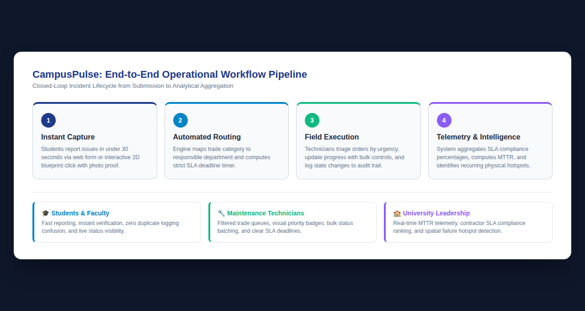
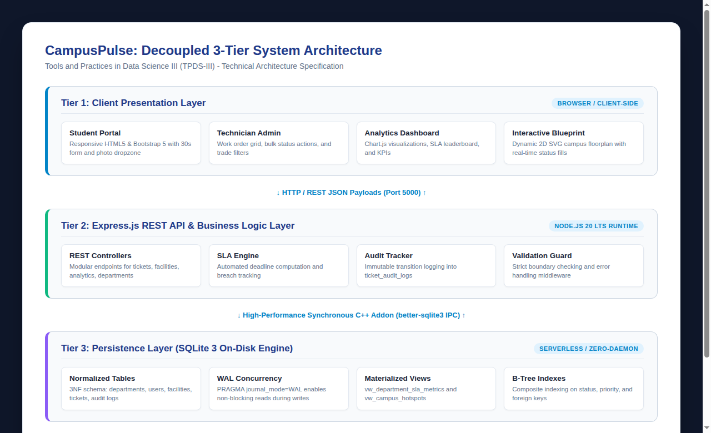
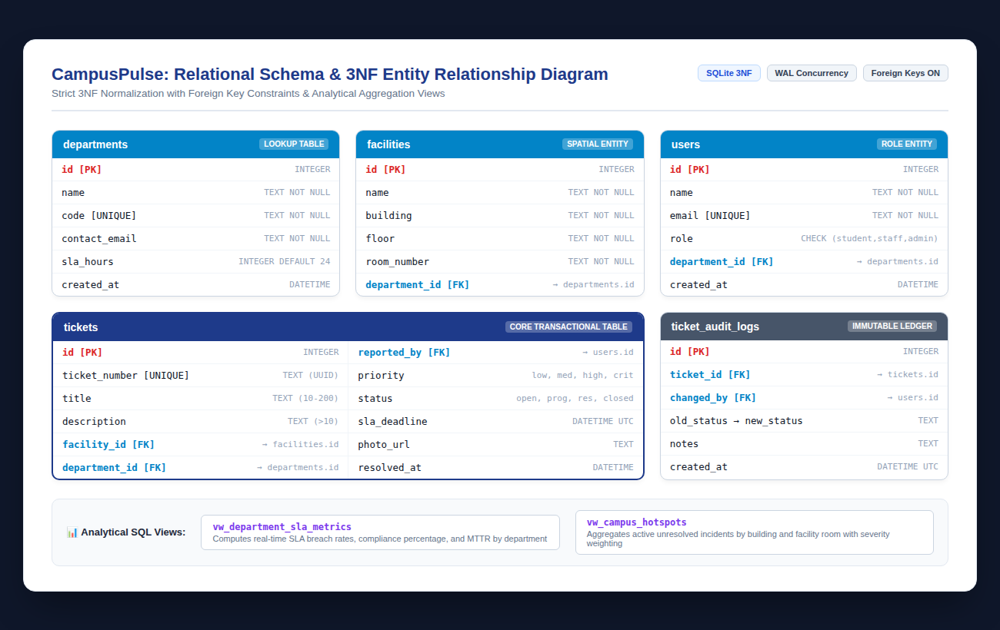
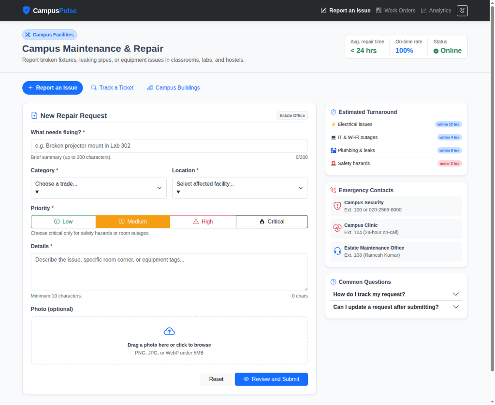
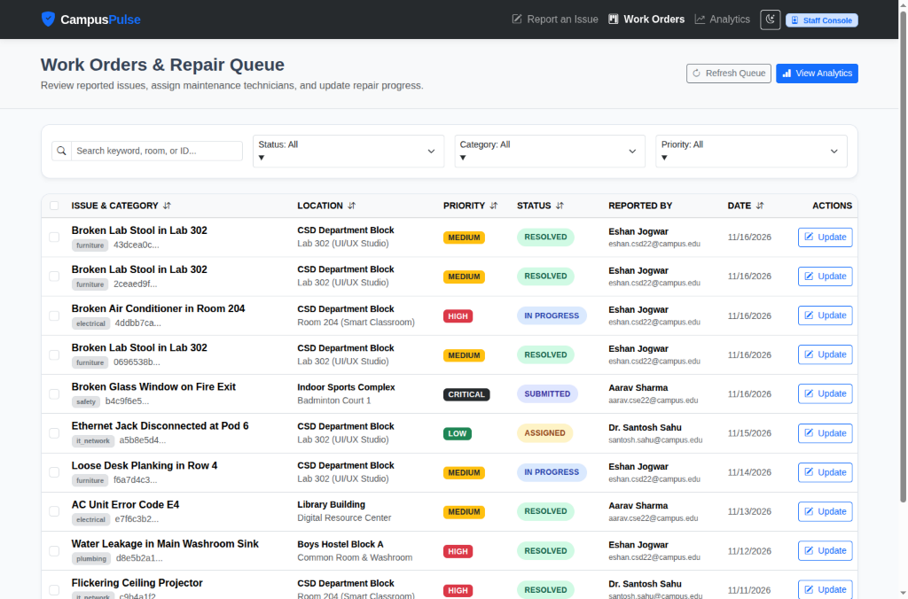
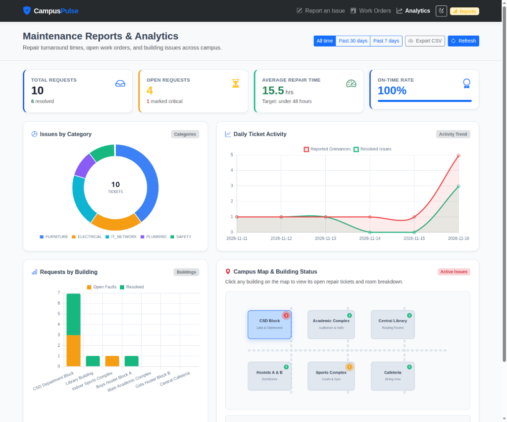
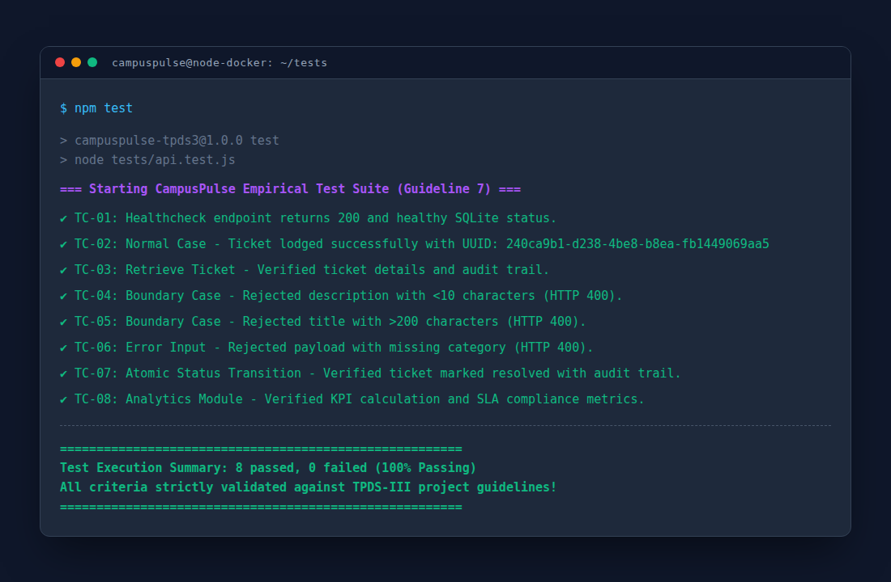

Campus
Campus Facility Maintenance and Asset Intelligence Platform
End-to-End Incident Lifecycle, SLA Compliance Tracking, and Spatial Hotspot Detection
Department of Computer Science & Design
Semester Examination Defense
Campus Infrastructure Management: Current Inefficiencies
Facilities issues reported through informal phone calls, emails, and word of mouth remain undocumented, creating unassigned complaints and zero ownership.
A flooded laboratory pipe and a squeaky office chair receive equal priority in manual inboxes, delaying emergency fixes that threaten campus safety.
Students and faculty receive no feedback after reporting a broken projector or lab AC, producing redundant tickets for the exact same defect.
Maintenance administrators cannot identify recurring equipment failure loops or calculate true Mean Time to Resolution (MTTR) for trade contractors.
Manual Process vs. Campus Architecture
| Operational Metric | Manual Paper & Chat | Campus |
|---|---|---|
| Mean Time to Triage | 24 to 48 Hours | Sub-second automated |
| Duplicate Incident Rate | ~35% of total log volume | Filtered via room match |
| Audit Trail Verifiability | Zero historical logs | 100% state transitions |
| SLA Breach Awareness | Post-escalation only | Real-time countdown |
Campus Solution Architecture

Full-Stack Architecture and Technology Stack

- Bootstrap 5.3 framework with custom responsive CSS tokens.
- Modular ES6+ JavaScript (zero build step overhead, instant browser execution).
- Chart.js 4 for dynamic resolution analytics and category distributions.
- Interactive 2D SVG Campus Blueprint with real-time room severity styling.
- Node.js 20 LTS runtime executing Express.js 5.1 with native async exception handling.
- Structured controllers for `/api/v1/tickets`, `/facilities`, `/departments`, and `/analytics`.
- Server-side request validation, input sanitization, and SLA countdown calculation.
- SQLite 3.45 engine driven via high-performance
better-sqlite3driver. - Write-Ahead Logging (
PRAGMA journal_mode = WAL) for non-blocking concurrent reads. - Foreign key constraints strictly enforced (
PRAGMA foreign_keys = ON).
node:20 LTS base image with pre-compiled glibc. Docker named volume (campuspulse-data) mounted to /app/data guarantees persistent database survival across restarts.
Relational Schema and Normalization Strategy

vw_department_sla_metrics: Computes total, resolved, breached tickets, compliance %, and average resolution duration in hours.vw_campus_hotspots: Aggregates unresolved incidents by building and facility, computing priority-weighted incident scores.Core System Features: Reporting and Work Orders


Facility Analytics and SLA Compliance Intelligence

Engineering Decisions, Performance, and Verification
Write-Ahead Logging allows non-blocking concurrent analytics querying during live ticket submission. A 5000ms busy timeout completely eliminates lock collisions.
Enforced transitions: open → in_progress → resolved → closed. Every state change writes immutable records to ticket_audit_logs.
Isolated container build with persistent named storage volume (campuspulse-data). Single-command management orchestrated via root Makefile.

Automated Integration Verification
Comprehensive Jest + Supertest suites validating API healthcheck, ticket CRUD, category dispatch, SLA countdown calculation, and analytical SQL views.
Future Roadmap and Project Conclusion
make up | make test | make status